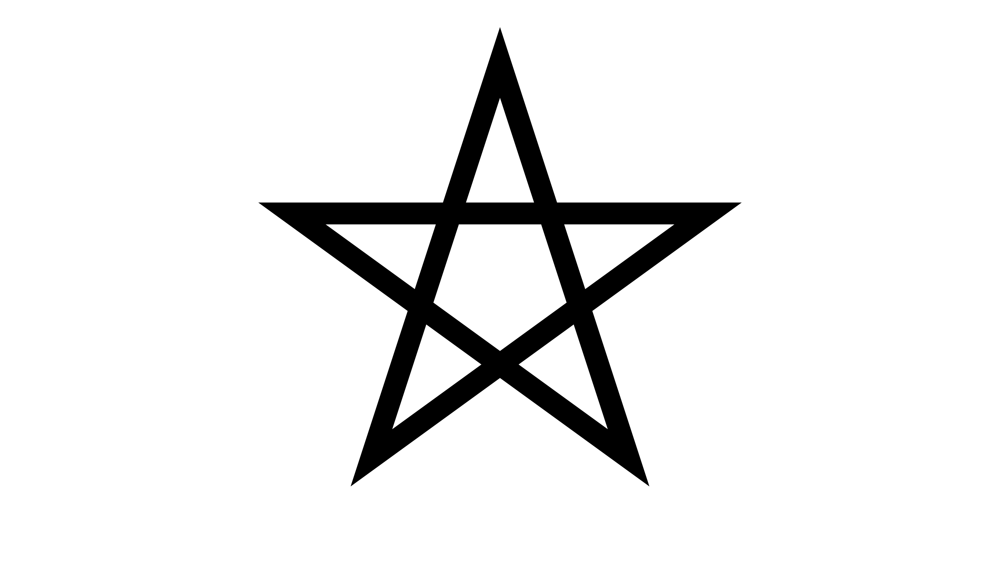
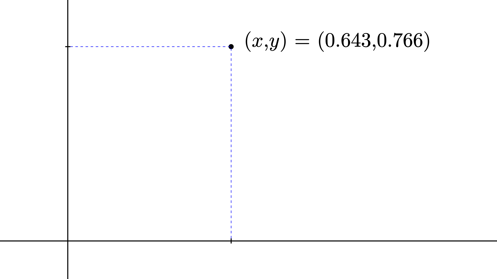
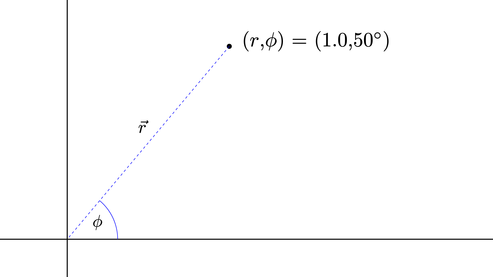
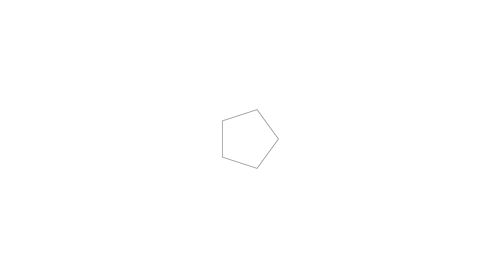
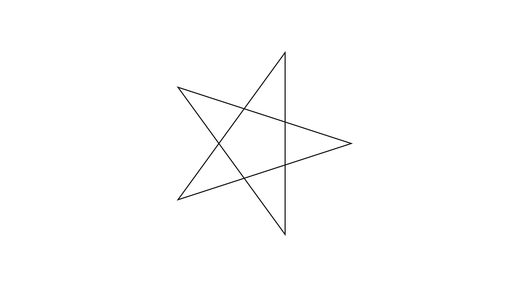
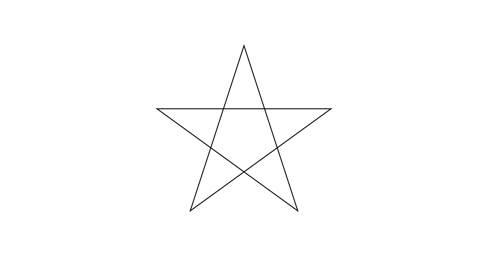
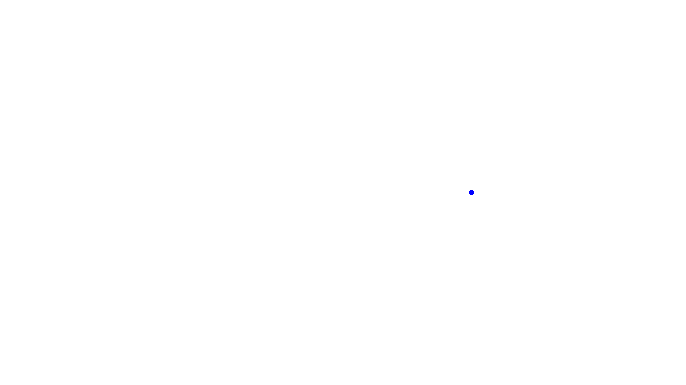

In this part of the reanimate blog post series we will:
- improve the shape of the star using coordinate transformations
- learn to move the star using
SceneandVar
For understanding the mathematical nature of the star (pentagram), we will start with a short detour about coordinate systems.
All posts of this series
Set-up
Reproducibility
For this blog post we use:
- stack as build system (lts-16.6)
- reanimate-1.0.0.0
The only change in our files will be an additional library (linear). This library allows for expressing our 2D coordinates as a 2D vector.
Thus, the following parts of our files will change:
reanimateMe.cabal:
build-depends: base >= 4.7 && < 5
, reanimate-1.0.0.0
, reanimate-svg
, linear
, textFurthermore, the imports (in ./src/Main.hs) will look like this throughout the blog post:
#!/usr/bin/env stack
-- stack runghc --package reanimate
module Main ( main ) where
import Reanimate
import Reanimate.Builtin.Documentation
-- to describe (x,y) coordinates as 2D-vector
import Linear.V2Make our star great again
What happend last time
In the last part of the series we created these two animations:


In these animations the star does not look as symmetric as you might expect from a star.
Because of this, we want to generate a ‘static’ animation of a symmetric star like this:

But how do we obtain the coordinates of the edges of the star/pentagram?
Cartesian and polar coordinates
Disclaimer: Everything discussed in this blog post is about two-dimensional (2D) coordinate systems, because this is all we need for our journey through reanimate.
As you might know, there are different types of coordinate systems in mathematics. The most well-known coordinate system is the Cartesian coordinate system, in which the 2D-coordinate of a point is described along a \(x\)- and \(y\)-axis:

Alternatively, the position of a point can be described using the so-called polar coordinate system, or short polar coordinates. This coordinate system uses the distance from the center \(r\) and an angle \(\phi\), which rotates the distance around the center:

But why should we use something other than the Cartesian coordinates, which we are already familiar with since math classes in school?
Well, some equations are more handy to solve in polar coordinates. Sometimes it is just easier to imagine what we want to express in polar coordinates. This will become clear in this blog post, where we will be using polar coordinates to obtain the edges of a pentagram.
Importantly, reanimate expects Cartesian coordinates as input. Hence, we need functions to transform between both coordinate systems.
Transforming between both coordinate systems
Here are the equations, which are needed for such transformation:
\[\begin{align*} x &= r \cdot \cos(\phi) \\ y &= r \cdot \sin(\phi) \end{align*}\]
So, for a given angle \(\phi\) and a length \(r\) we can calculate the \((x,y)\)-coordinate of our point in space.
“Okay, okay! But this is a blog post about Haskell and reanimate. Where is some code?”, the impatient reader might wonder.
Let’s put this equation in some code for a later use.
-- Transform polar coordinates to Cartesian coordinates
-- (arbitrary length)
fromPolar :: Floating a => a -> a -> V2 a
fromPolar r ang = V2 x y
where
x = r * cos( fromDegrees ang )
y = r * sin( fromDegrees ang )The above code takes \(r\) and \(\phi\) as arguments (polar coordinates) and returns a two-dimensional vector in Cartesian coordinates. We use V2 x y instead of (x,y), because it is a bit more convenient and learning something new is always fun. Don’t you think so, too? I first encountered this in the reanimate read-the-docs.
Unfortunately, trigonometric functions in Haskell take arguments in radian. So we have to transform \(\phi\) from degrees (°) into radian using fromDegrees:
-- Transform from degrees to radian
fromDegrees :: Floating a => a -> a
fromDegrees deg = deg * pi / 180Additionally, we only want to work with values on the unit circle, i.e. a circle with \(r = 1\).
-- Transform polar coordinates to Cartesian coordinates (unit circle)
fromPolarU :: Floating a => a -> V2 a
fromPolarU = fromPolar 1Vertices of a pentagram
Now that we know what Cartesian and polar coordinates are, we are ready to think about the vertices of a pentagram.
Do you remember, when I was mentioning that some problems are easier to solve in polar coordinates? Finding the vertices of a star is such case. Since we are only interested in finding coordinates on the unit circle (\(r = 1\)), we only have to worry about one variable - \(\phi\). \(\phi\) is an angle and thus it is periodic with a period of 360 degrees (°). Hence, the only interval that matters is \(\phi \in\) [0°, 360°]. With this in mind, we can divide the maximum value of the interval, i.e. 360°, by five to obtain the step size separating the five vertices of the star. Thus, these five coordinates will be separated by 72°, which is implemented like this:
coordinatesInPolar :: [Double]
coordinatesInPolar = [72, 144, 216, 288, 360]This may all seems a little bit abstract and complicated. Have a look at the following animation (github-repository) to see how the coordinates of the vertices can be obtained:
![A visual demonstration (gif) of how to obtain the edges of a pentagram using polar
coordinates on a unit circle. Scene 1: One (red) dot follows along the unit circle
and stops every 72 degrees. At each stop a static dot is created. Near this dot the
coordinates in Cartesian coordinates are given in text form. Additionally, A table,
which is located on the right hand side of the gif, which gets expanded with a tuple
of the angle, the x and the y coordinate. Scene 2: The unit circle disappeares and
the static dots remain. Along these static dots lines are drawn, which form a
pentagram. The table with the coordinate values remain on the right hand side. The
pentagram is rotated by 90 degrees after a short pause. The values in the table
change accordingly. The final frame depict the pentagram and the correspoding
coordinate values.](../images/reanimateMe02/Pentagram.gif "How to obtain the coordinates of the vertices of a pentagram")
In this animation you can see, how we “walk” along the unit circle, stop every 72° and add the Cartesian coordinates to our table. After that, we connect the vertices of the start in a certain sequence.
Let’s try to obtain a symmetric star.
First try
Now that we have defined our coordinates of the vertices in polar coordinates (coordinatesInPolar), we can transform these coordinates into Cartesian coordinates using the fromPolarU function:
coordinatesCartesian :: V2 Double
coordinatesCartesian = fromPolarU <$> coordinatesPolarAnd voilà, we have the Cartesian coordinates of the five vertices. To animate these coordinates in a static frame, we use the mkLinePathClosed function. Unfortunately, using this function in combination with coordinatesCartesian, results in the following animation:

In this animation the five vertices are located at the correct position; the lines, however, are not connected in the correct way. Let’s fix this!
Connection matters
To draw our star in the correct way, we have to rearrange our list. As you have seen before in the animation of the vertices, we have to connect the coordinates (in polar coordinates) like this:
72 -> 216
216 -> 360
360 -> 144
144 -> 288
288 -> 72 # this will be done by `mkLinePathClosed`With all this in mind, we can define some polar coordinates in the correct order:
coordsInPolarRearranged :: [Double]
coordsInPolarRearranged = [72, 216, 360, 144, 288]With the correct sequence of polar coordinates at hand, we can implement a function, which returns the star as a SVG:
staticStar :: SVG
staticStar =
withStrokeWidth 0.01
$ mkLinePathClosed coordsCartesianRearranged
where
coordsCartesianRearranged =
transformCoord . fromPolarU <$> coordsInPolarRearranged
transformCoord (V2 x y) = (x,y)In this function each entry of the list coordsInPolarRearranged is modified using fromPolarU and transformCoord to obtain a list of vertices in Cartesian coordinates. These coordinates are then used to create a SVG using mkLinePathClosed. withStrokeWidth allows us to modify the stroke width of our SVG.
Let’s plug it into reanimate:
main :: IO ()
main = reanimate
$ docEnv
$ staticFrame (3/60)
$ staticStarHere we use staticFrame (3/60) instead of staticFrame 1 to only produce three frames in the output format (.gif or .mp4). This will reduce the size of the animation significantly. For .gif the minimum number of frames is 3, while for .mp4 1 would be possible, too.
The above code will result in the following animation:
Changing the view
Unfortunately, our star is too small. We have two options to change the size of the star.
We could use the scale function, which scales a SVG, or we can change the view on the star using so-called viewboxes. While scale would only affect one SVG in the animation (here: the star), withViewBox will change the overall aspect ratio and coordinates of the whole animation. Imagine the latter to be like the zoom of a camera, making the object appear smaller or bigger without affecting the actual size of the object. Let’s use this “zoom” function to change the view.
Keep in mind, that the default units of the coordinate system are 16 and 9 for the x- and y-coordinate, respectively.
Since the vertices of the star are positioned on a unit circle (\(r = 1\)), changing the viewbox to a width and a height of three would create a sufficient zoom on the star. This would result in an aspect ratio of 1:1, but we want a 16:9 aspect ratio. Thus, we have to multiple the \(x\) values by 16/9.
With this in mind, we can modify the above code by adding withViewBox to change the view on the animation:
ratio :: Double
ratio = 16/9
main :: IO ()
main = reanimate
$ docEnv
$ mapA (withViewBox (-1.5*ratio, -1.5, 3*ratio, 3))
$ staticFrame (3/60)
$ staticStarThe result will look like this:

Finishing touches
“The star is crooked - no vertex is pointing upwards!”, you might say. To fix this, let’s add 90 degrees (+90) to all polar coordinates to rotate our star.
staticStar :: SVG
staticStar =
withStrokeWidth 0.01
$ mkLinePathClosed coordsCartesianRearranged
where
coordsCartesianRearranged =
transformCoord . fromPolarU . (+90) <$> coordsInPolarRearranged
transformCoord (V2 x y) = (x,y)Look at this beautiful rotated star!

Hollywood star
In this second half of the blog post, we want to do bring our star to life. Yeah! Finally! To do so, we will use the Scene monad and variables called Var. Scene allows to create complex setups for animations.
But what actually is the difference between a Scene and an Animation?
Animation vs Scene
As you might remember, the function reanimate, which creates an output (.gif or .mp4), takes Animation as input. Hence, we cannot write reanimate animations without Animation (Duh!).
From the API documentation we learn that Animation is a data type, which describes an SVG over a finite time. A Scene, on the other hand describes “a sequence of animations and variables that change over time”. Importantly, Scene is a Monad, making it more powerful than Animation.
“But wait! What is Scene useful for, if reanimate requires Animation as input anyway?” This is a good question. Scene is powerful for arranging Animations in any desired way. Then, you can combine the complex Scenes into an overall Animation, which can be rendered by reanimate. Additionally, Scene enables the use of Var, which are variables that can change dynamically (over time) and influence the behavior of our SVG/Animation.
Enough talking! Let’s (re)animate!
How to use Scene
First, we need to discuss how to incorporate a Scene into our code. scene (lower case) is a function, which takes a Scene and transforms it into an Animation, that can then be passed to reanimate. Hence, instead of “working” with Animation, we can work with scene Scene like this:
main :: IO ()
main = reanimate
$ docEnv
$ mapA (withViewBox (-1.5*ratio, -1.5, 3*ratio, 3))
$ scene firstScene
firstScene :: Scene s ()
firstScene = undefined -- our first scene comes hereStarting small
To start simple, we will animate a single dot (a filled circle) to familiarize ourselves with Vars. This dot, given a coordinate V2 Double as argument, can be defined as follows:
dot :: V2 Double -> SVG
dot (V2 x y) =
translate x y
$ withFillOpacity 1
$ withFillColor "blue"
$ withStrokeColor "white"
$ mkCircle 0.02We use mkCircle to define a circle, which is modified by withStrokeColor, withFillColor and withFillOpacity to represent a dot. translate allows us to place the dot at a specific Cartesian coordinate.
Animating the dot will look like this:

To generate the dot within the Scene, we use:
firstScene :: Scene s ()
firstScene = do
newSpriteSVG_ $ dot (fromPolarU 0)Look how short the code for this scene is - just one line! We generate a Sprite from a SVG using newSpriteSVG_. This Sprite is displayed in our scene right after the creation.
The underscore (_) in newSpriteSVG_ tells the compiler to “throw away” the result of this computation. This means that the Sprite is created but cannot be addressed in the Scene.
This was our first task using Scene. Now let us move the dot. Hopefully, you are as excited as I am!
Spicing up our Scene with Var
Besides newSpriteSVG_, there is also newSprite_, which generates a Sprite from a so-called frame generator Frame s SVG. This frame generator will act like a SVG, but has a variable Var attached to it. This assigned variable allows for some dynamic change in the animation.
Let’s see this in action. First, we want to define a Var using the newVar function, which describes the location of our dot:
secondScene = do
currentPosition <- newVar $ fromPolarU 0
newSprite_ $ dot <$> unVar currentPositionAlthough this code looks different than firstScene (previous section), the resulting animation will look the same. The only change in the code for secondScene is that our Sprite has a Var attached to it. We can modify this Var that represents the location of the dot throughout the Scene.
The Var, which is used to create the Sprite of the dot, will not be consumed. Hence, we could attach this Var to other Sprites.
Now let’s change the position of the dot by introducing the function moveDot, which interacts with the variable currentPosition:
secondScene :: Scene s ()
secondScene = do
currentPosition <- newVar $ fromPolarU 0
newSprite_ $ dot <$> unVar currentPosition
wait 1
let moveDot newPos = do
writeVar currentPosition newPos
wait 1
moveDot (fromPolarU 72)
moveDot (fromPolarU 144)
moveDot (fromPolarU 216)
moveDot (fromPolarU 288)We define moveDot within a let-statement, so that we can use the variable currentPosition, which belongs to the whole Scene. Within moveDot, the current value of the variable currentPosition is overwritten by writeVar using the values of the argument newPos.
The final result will look like this:
tweenVar makes it run smooth
The jumping dot of the last section is not that pleasing to look at. Let’s try to smoothly move the dot along a line instead of jumping around.
For this, the only thing we have to change is the moveDot function. Let’s do this in another Scene:
thirdScene :: Scene s ()
thirdScene = do
currentPosition <- newVar $ fromPolarU 0
newSprite_ $ dot <$> unVar currentPosition
wait 1
let moveDot (V2 x' y') = do
(V2 x y) <- readVar currentPosition
let (deltaX, deltaY) = (x'-x, y'-y)
tweenVar currentPosition 2
$ \_ t -> V2 (x+deltaX*t) (y+deltaY*t)
wait 1
moveDot (fromPolarU 72)
moveDot (fromPolarU 144)
moveDot (fromPolarU 216)
moveDot (fromPolarU 288)
moveDot (fromPolarU 360)There is a lot happening in the new version of moveDot. Let me guide you through it:
let moveDot (V2 x' y') = doFirst, we pattern match the argument to obtain \(x'\) and \(y'\), the final x and y values of the final coordinate (in Cartesian coordinates).
(V2 x y) <- readVar currentPosition
let (deltaX, deltaY) = (x'-x, y'-y)Second, we read the current position from the variable currentPosition and pattern match to obtain \(x\) and \(y\). After that, we calculate the difference of the old and new x and y values (\(\Delta x = x'-x\) and \(\Delta y = y'-y\)), which will come in handy in the next line(s).
tweenVar currentPosition 2
$ \_ t -> V2 (x+deltaX*t) (y+deltaY*t)Third, we modify the currentPosition variable over a time frame of 2 seconds (120 Frames). This is done using the tweenVar function, which takes a Var, Duration and a custom function to modify the passed Var. In our case, we add the \(\Delta x\) and \(\Delta y\) to the start coordinate to get a smooth transition between the two. Importantly, t takes values between 0 and 1, independent from the duration of the animation (in this case 2).
Finally, let’s talk about the custom function used in tweenVar in more detail.
It can be written as the following mathematical equation:
\[ coord(t) = (x + \Delta x \cdot t, \quad y + \Delta y \cdot t) \]
This equation returns the start coordinates \((x, y)\), at the beginning of the animation:
\[ coord(0) = (x, y) \]
But what about the end coordinates? When we pass the final time of the animation (\(t = 1\)) to the equation, we obtain:
\[ coord(1) = (x + \Delta x, \quad y + \Delta y) = (x + x' - x, \quad y + y' -y) = (x', y')\]
Thus, the final coordinate is returned at the end of the animation. Most importantly, our return value (\(coord\)) will produce coordinates for a smooth transition for every value between \(t = 0\) and \(t = 1\):
Nice! As you can see, the variable currentPosition is changed smoothly.
Time to be creative
With Var and Scene at hand, there are no limits to your creativity with reanimate. How about exchanging the dot with a star or your favorite SVG?
Feel free to have a look at the source code of this animation.
Summary
To sum up, we learned a lot about coordinate systems and how to obtain the coordinates of a star.
Additionally, we used the following features of reanimate:
withViewBoxto change the view onto an animationVarto modify aSceneover the time
Of course, there is a lot more to learn about reanimate. Future blog posts will follow. Stay tuned!
Source code
All created animations for this blog post are located in this github repository. There is one exception: the lengthy animation, which demonstrates how to obtain the coordinates of the vertices and how to draw the star, is located in this github repository.
Feel free to use the code as inspiration.